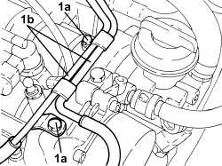
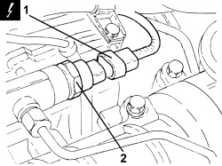
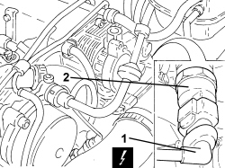

1060G28 FUEL PRESSURE SENSOR ON FUEL MANIFOLD TO INJECTORS - R.R
- Path
- Procedures > 10 ENGINE > 1060 DIESEL INJECTION SYSTEM > 1060G DIESEL INJECTION PRESSURE PUMP ELECTRONIC CONTROL > 1060G28 FUEL PRESSURE SENSOR ON FUEL MANIFOLD TO INJECTORS - R.R
- Kind
- repair procedure (removal / refitting; the operation number is the code)
- Applies to
- engines: 1.9 JTD 8v, 1.9 JTD 16v, 2.4 JTD 20v; all production periods
- Interactive page
- https://sloeber94.github.io/elrnDB-fCrm/en/#/194000337
Applies to: engines: 1.9 JTD 16v, 2.4 JTD 20v; all production periods
 Removing
Removing
 Refitting
Refitting- Make sure that the ignition key is in the OFF position, then disconnect the battery terminal (-).
Description | Connector | |
|---|---|---|
- | Battery |
Op. 1016A10 SOUND-PROOFING COVER - R.R
1. Undo the bolts (1a) and move the vacuum pipes (1b) sideways.

Applies to: engines: 1.9 JTD 16v, 2.4 JTD 20v; all production periods
1. Disconnect the electrical connection from the fuel pressure sensor on the fuel manifold.
Description | Connector | |
|---|---|---|
1 | Fuel pressure sensor |
2. Undo the pressure sensor from the fuel manifold and remove it.

Applies to: engines: 1.9 JTD 16v, 2.4 JTD 20v; all production periods
Refitting
Removing- Place the fuel pressure sensor in position on the fuel manifold and tighten it to the recommended torque.
Component | Fastening | dia | Value (daNm) | Validity |
|---|---|---|---|---|
Fuel pressure sensor | - | M.......... | (fuel manifold side) 6.5 - 7.5 | 1.9 JTD 16v 2.4 JTD 20v |
- Connect the electrical connection to the fuel pressure sensor on the fuel manifold.
- Place the vacuum pipes in their housings and secure them using the bolts.
Op. 1016A10 SOUND-PROOFING COVER - R.R
- Connect the negative battery terminal.
Applies to: engines: 1.9 JTD 8v; all production periods
Removing
RefittingOp. 5530B52 BATTERY SUPPORT/DRIP TRAY - R.R
Op. 1048B27 RIGID PIPE FOR AIR INLET TO THROTTLE BODY - R R
1. Disconnect the electrical connection from the fuel pressure sensor on the fuel manifold.
Description | Connector | |
|---|---|---|
1 | Fuel pressure sensor |
2. Undo the pressure sensor from the fuel manifold and remove it.

Applies to: engines: 1.9 JTD 8v; all production periods
Refitting
Removing- Place the fuel pressure sensor in position on the fuel manifold and tighten it to the recommended torque.
Component | Fastening | dia | Value (daNm) | Validity |
|---|---|---|---|---|
Fuel pressure sensor | - | - | (fuel manifold side) 6.5 - 7.5 | 1.9 JTD 8v |
- Connect the electrical connection to the fuel pressure sensor on the fuel manifold.
Op. 1048B27 RIGID PIPE FOR AIR INLET TO THROTTLE BODY - R R
Topics linked from this page (6)
- 1016A10 SOUND-PROOFING COVER - R.R
- 1048B27 RIGID PIPE FOR AIR INLET TO THROTTLE BODY - R R
- 5530B10 BATTERY - R+R
- 5530B52 BATTERY SUPPORT/DRIP TRAY - R.R
- A001 BATTERY
- K083 FUEL PRESSURE SENSOR